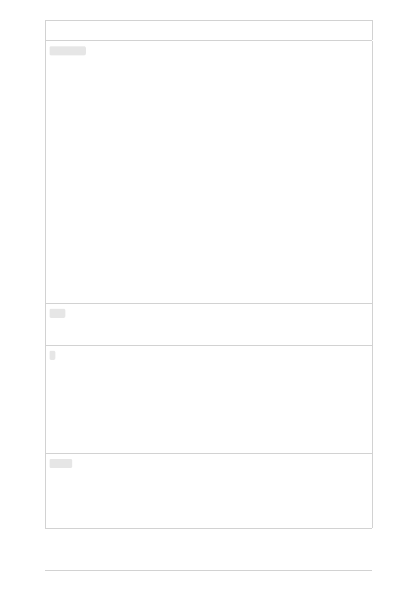

Parameter
Type
Required? Default
Description
logit_bias
map
Optional
null
Modify the likelihood of
specified tokens appearing in the
completion. Accepts a json
object that maps tokens
(specified by their token ID in the
GPT tokenizer) to an associated
bias value from -100 to 100. You
can use this tokenizer tool (which
works for both GPT-2 and GPT-3)
to convert text to token IDs.
Mathematically, the bias is added
to the logits generated by the
model prior to sampling. The
exact effect will vary per model,
but values between -1 and 1
should decrease or increase
likelihood of selection; values like
-100 or 100 should result in a
ban or exclusive selection of the
relevant token. As an example,
you can pass {"50256": -100} to
prevent the <|endoftext|> token
from being generated.
user
string
Optional
A unique identifier representing
your end-user, which can help
monitoring and detecting abuse
n
integer
Optional
1
How many completions to
generate for each prompt. Note:
Because this parameter
generates many completions, it
can quickly consume your token
quota. Use carefully and ensure
that you have reasonable
settings for max_tokens and
stop.
stream
boolean Optional
False
Whether to stream back partial
progress. If set, tokens will be
sent as data-only server-sent
events as they become available,
with the stream terminated by a
data: [DONE] message.